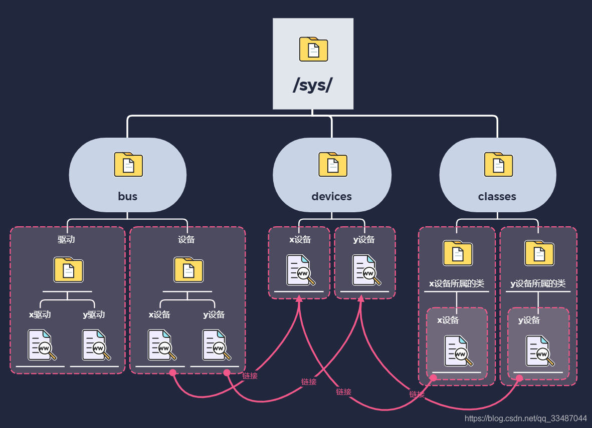

Kobject和sysfs
kobject、ktype、kset 以及其相互关系
kobject
/* include/linux/kobject.h */
struct kobject {
const char *name;
struct list_head entry;
struct kobject *parent; // 指向kobject的父对象，这样一来kobject就会在内核中构造一个对**象层次结构**
struct kset *kset; // kset可以把kobject集中到一个集合里，
struct kobj_type *ktype; // ktype可以描述集合中kobject所共有的特性；
struct kernfs_node *sd; // 指向sysfd_dirent结构体，该结构体在sysfs内部就是一个表示kobject的inode结构体
struct kref kref; // 提供引用计数
#ifdef CONFIG_DEBUG_KOBJECT_RELEASE
struct delayed_work release;
#endif
unsigned int state_initialized:1;
unsigned int state_in_sysfs:1;
unsigned int state_add_uevent_sent:1;
unsigned int state_remove_uevent_sent:1;
unsigned int uevent_suppress:1;
};
ktype
ktype用于描述一族kobject所具有的普遍特性
/* include/linux/kobject.h */
struct kobj_type {
void (*release)(struct kobject *kobj); // 指向在kobject引用计数减至零时，要被调用的析构函数
const struct sysfs_ops *sysfs_ops; // 指向sysfs_ops结构体，描述了sysfs文件读写时操作。
struct attribute **default_attrs; // 指向attribute结构体数组，这些结构体定义了该kobject的默认属性，这些属性就是sysfs中的文件，数组中的最后一项为NULL
const struct attribute_group **default_groups;
const struct kobj_ns_type_operations *(*child_ns_type)(struct kobject *kobj);
const void *(*namespace)(struct kobject *kobj);
void (*get_ownership)(struct kobject *kobj, kuid_t *uid, kgid_t *gid);
};
kset
kset表示很多kobject的集合，而ktype描述kset中kobject所共有的特性。具有相同ktype的kobject可以被分组到不同的kset。 linux内核中，只有少数一些的ktype，却有多个kset。
/* include/linux/kobject.h */
/**
* struct kset - a set of kobjects of a specific type, belonging to a specific subsystem.
*
* A kset defines a group of kobjects. They can be individually
* different "types" but overall these kobjects all want to be grouped
* together and operated on in the same manner. ksets are used to
* define the attribute callbacks and other common events that happen to
* a kobject.
*
* @list: the list of all kobjects for this kset
* @list_lock: a lock for iterating over the kobjects
* @kobj: the embedded kobject for this kset (recursion, isn't it fun...)
* @uevent_ops: the set of uevent operations for this kset. These are
* called whenever a kobject has something happen to it so that the kset
* can add new environment variables, or filter out the uevents if so
* desired.
*/
struct kset {
struct list_head list; // 连接集合中所有的kobject对象
spinlock_t list_lock; // 用于保护链表元素的自旋锁
struct kobject kobj; // 内嵌一个kobject对象，作为集合中其他kobject的基类
const struct kset_uevent_ops *uevent_ops; // 指向一个结构体，用于处理集合中kobject对象的热插拔操作
} __randomize_layout;

基本操作
kobject基本操作
void kobject_init(struct kobject *kobj, struct kobj_type *ktype);
// 用例
struct kobject * kobj;
kobj = kmalloc(sizeof(kobj), GFP_KERNEL);
if (!kobj)
return -ENOMEM;
memset(kobj, 0, sizeof(kobj));
kobj->kset = my_kset;
kobject_init(kobj, my_ktype);
更简单的接口
struct kobject *kobject_create(void);
引用计数基本操作
struct kobject * kobject_get(struct kobject *kobj); // 增加引用计数
void kobject_put(struct kobject *kobj); // 减少引用计数
sysfs
sysfs文件系统是一个位于内存中的虚拟文件系统，它提供了kobject对象层次结构的视图。帮助用户能以一个简单文件系统的方式来观察系统中各种设备的拓扑结构。借助属性对象，kobject可以以文件的形式，导出内核变量提供给用户读取或者写入。

sysfs中添加和删除目录（kobject）
仅仅初始化kobject是不能自动将其导出到sysfs中的，需要调用以下函数才行。
#include <linux/kobject.h>
int kobject_add(struct kobject *kobj, struct kobject *parent, const char *fmt, ...);
// kobj : 要导出到sysfs的kobject对象
// parent : 其父对象，即sysfs中的父目录
// fmt : kobj在sysfs中的目录名，支持printf标准格式
struct kobject * kobject_create_and_add(const char *name, struct kobject *parent);
// 直接接受字符串指针作为目录名
void kobject_del(struct kobject *kobj);
// 从sysfs中删除指定的kobj
//函数都定义在lib/kobject.c中
kobject在sysfs中的位置，取决于kobject在对象层次结构中的位置。
- 如果kobject的父指针被设置，则sysfs中kobject将被映射为其父目录下的子目录；
- 如果parent指针没有设置，则kobject将被映射为kset-kobj中的子目录；
- 如果给定的kobject中parent和kset字段都没有被设置，则认为kobject没有父对象，会映射为sysfs根目录的子目录。
向sysfs中添加文件
默认属性
默认文件由kobject和kset中的ktype字段提供。因此所有具有相同类型的kobject在sysfs中对应的目录下都有相同的默认文件集合。
/* include/linux/kobject.h */
struct kobj_type {
void (*release)(struct kobject *kobj); // 指向在kobject引用计数减至零时，要被调用的析构函数
const struct sysfs_ops *sysfs_ops; // 指向sysfs_ops结构体，描述了sysfs文件读写时操作。
struct attribute **default_attrs; // 指向attribute结构体数组，这些结构体定义了该kobject的默认属性，这些属性就是sysfs中的文件，数组中的最后一项为NULL
};
kobj_type结构体有一个default_attrs, 它是一个attribute结构体数组，这些属性负责将内核数据映射城sysfs中的文件。
/* linux/sysfs.h */
struct attribute {
const char *name; /* 属性名字，及sysfs中文件名字 */
umode_t mode; /* 文件对应的权限 */
#ifdef CONFIG_DEBUG_LOCK_ALLOC
bool ignore_lockdep:1;
struct lock_class_key *key;
struct lock_class_key skey;
#endif
};
default_attrs列出了默认属性，sysfs_ops字段则描述了如何使用他们。
struct sysfs_ops {
ssize_t (*show)(struct kobject *, struct attribute *, char *); /* 读取sysfs文件时调用该函数 */
ssize_t (*store)(struct kobject *, struct attribute *, const char *, size_t); /*写入sysfs文件时调用该函数*/
};
创建/删除新属性
/* fs/sysfs/file.c */
int sysfs_create_file(struct kobject *kobj, const struct attribute *attr);
int sysfs_remove_file(struct kobject *kobj, const struct attribute *attr);
/* fs/sysfs/symlink.c */
int sysfs_create_link(struct kobject *kobj, struct kobject *target, char *name);
int sysfs_remove_link(struct kobject *kobj, char *name);
内核事件
int kobject_uevent(struct kobject *kobj, enum kobject_action action);
// kobj : 发送信号的kobject对象
// 事件类型
enum kobject_action {
KOBJ_ADD,
KOBJ_REMOVE,
KOBJ_CHANGE,
KOBJ_MOVE,
KOBJ_ONLINE,
KOBJ_OFFLINE,
KOBJ_BIND,
KOBJ_UNBIND,
};